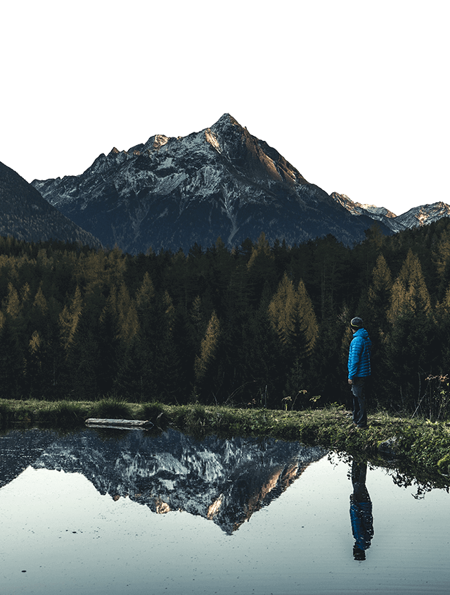
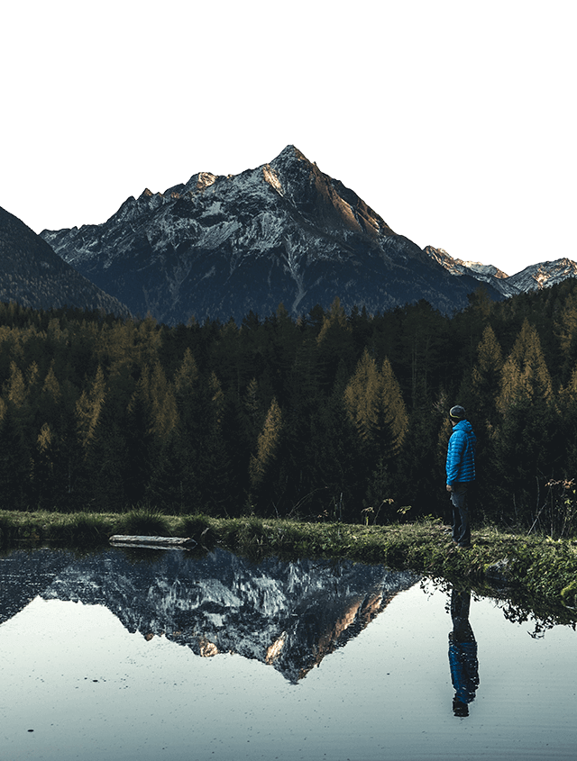

Sölden è la prima gara dell’anno, una sorta di primo giorno di scuola. Cosa ti piace di questa tappa?
Sölden è sempre una bella gara. Un sacco di persone arrivano per vederla e godersi il weekend come una grande festa. Sono felice di ricominciare dopo tanto tempo lontano dalle piste: la prima gara dell’anno mette sempre più pressione, che però aiuta a calarsi subito nella competizione.
L’anno scorso hai vinto la Rettenbach per la prima volta. È il tuo ricordo più bello qui?
Direi di sì, non c’è niente di meglio di una vittoria!
Sölden è un grande comprensorio sciistico, con diverse proposte e offerte. La gara occupa la gran parte del tuo tempo, ma riesci a scoprire comunque questo splendido posto?
A dir la verità no. Oltre la gara, abbiamo così tante cose da fare (interviste, presentazioni, eventi con gli sponsor…), che è davvero difficile trovare tempo per fare qualcos’altro. È un peccato, perché ci sono tante belle piste, ognuna con qualcosa di unico da offrire.
Le tre cose che più ti piacciono di Sölden (gara a parte).
Le distese di larici che si inerpicano sulle montagne e il ghiacciaio, sicuramente. E poi mi piace il fatto che si respiri la passione per lo sci in ogni angolo.
L’adrenalina è una componente fondamentale in qualunque competizione, in particolare nello sci. Se è troppa rischi di esagerare, se è poca rischi di rendere poco. Come la gestisci?
È una linea molto sottile, ma è una cosa su cui lavorare e per cui è importante imparare a conoscersi. Ma è anche la chiave per la vittoria. Non è facile trovare lo spazio giusto per se stessi su cui lavorare, mentalmente, fisicamente e tecnicamente.


 

{kind=link}
{kind=link}